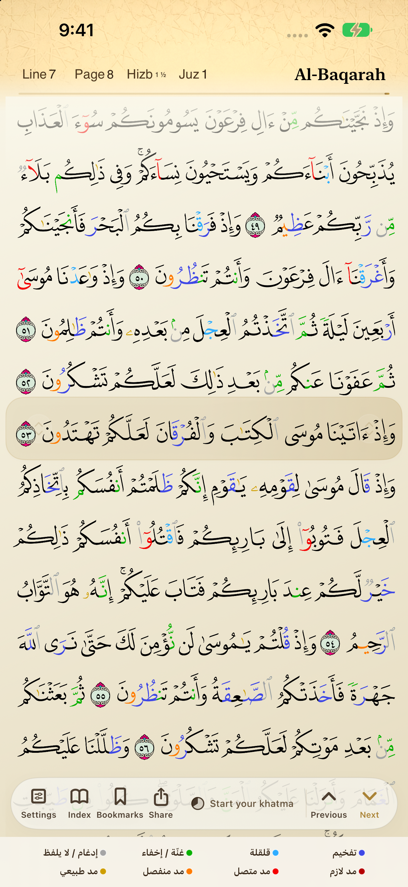
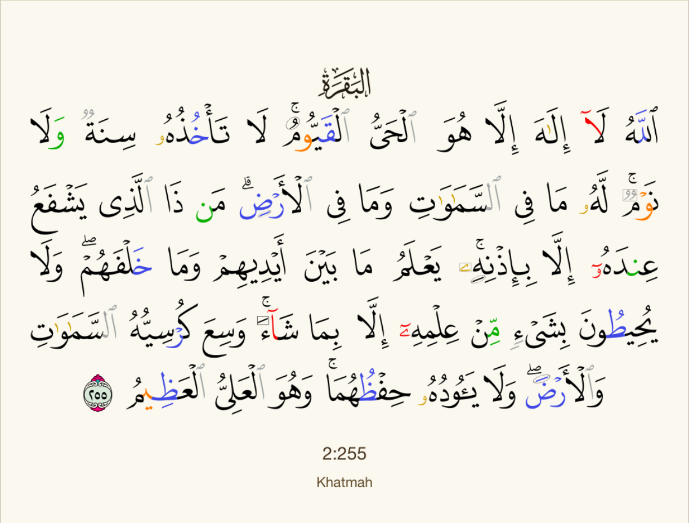

Khatmah
Quran reading and khatma tracking, at your own pace.
Read from a familiar Mushaf, keep your place, and continue whenever you’re ready.
Download Khatmah on the App StoreFree for iPhone
Read your way.
Page Mode preserves the familiar Mushaf. Focus Scroll gives the line you’re reading a clear place to follow.
Move between reading views without losing your place.

Continue your khatma.
Track the khatmas you’re reading and return to a saved place when you come back.
Your reading and progress stay on your iPhone.
Comfortable in more places.
Choose a dark reading theme, or turn your iPhone sideways for a wider Focus view.


Share Quran verses as an image.
Prepare a clear image of the verses you’re reading, with the surah name and verse numbers.

Read offlineNo accountNo ads
Keep reading with Khatmah.
Familiar reading, a reliable place to return to, and khatma progress at your own pace.